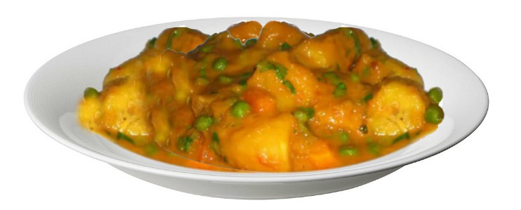

Food and Human Nutrition
Form Two
Method
1. Wash the peas and boil them until they become almost tender.
2. Slice the tomato and onion, crush garlic and then chop sweet pepper and carrot.
3. Peel and cut the bananas into pieces. Wash and put them in cold water.
4. Put all ingredients, except banana, in the cooking pan of boiled peas. Leave them to cook for 2 minutes.
5. Add bananas and water, just to cover the mixture.
6. Cover the pan and let it simmer until the bananas and peas are tender, and the mixture is not dry. Add coconut milk and continue simmering for 2 minutes.
7. Serve the food on a plate as shown in Figure 3.16.

Figure 3.16: Banana with peas stew
Activity 3.9
Preparation of banana with peas stew
Prepare, cook and serve banana with peas stew by following the appropriate methods.
Explain the importance of consuming this meal.
Mixed vegetable salad
Ingredients (serve 2 people)
1 carrot
1 small cucumber